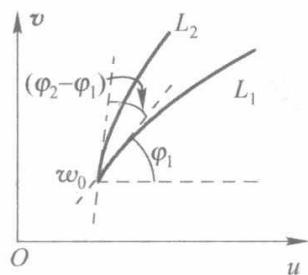
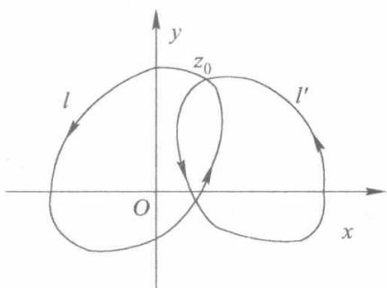

第5章 留数定理
留数是复变函数论中的重要概念之一，同时也是重要的数学工具。留数定理是柯西积分定理和柯西积分公式的继续。留数概念与留数定理以及留数和定理，均与复变函数的环路积分有着十分密切的联系。
本章详细介绍了解析函数孤立奇点的分类和判别方法，然后给出有关留数的概念以及留数的基本定理，并给出了无穷远点留数概念，详细讨论了无穷远点留数的计算方法，最后介绍留数理论在计算复积分和实积分中的典型应用。
5.1 解析函数的孤立奇点
5.1.1 孤立奇点概念
定义5.1.1 孤立奇点，非孤立奇点 若函数 f(z) 在 z=z0 不解析（或无定义），而在点 z0 的去心邻域 0<∣z−z0∣<δ(δ>0) 内解析，则称点 z=z0 是 f(z) 的一个孤立奇点。例如函数 z1 和 ez1 都以 z=0 为孤立奇点。但函数可能存在非孤立的奇点。
若函数 f(z) 在点 z=z0 的无论多么小的邻域内，总有除点 z0 以外的奇点，则称 z0 是 f(z) 的非孤立奇点。例如函数 f(z)=sinz11 ，易见 z=0 是它的一个奇点，但除此之外， z1=nπ 即 z=nπ1 (n=±1,±2,±3) 也是它的奇点。当 n 的绝对值逐渐增加时， nπ1 可任意接近于点 z=0 。换句话说，在点 z=0 的无论多么小的去心邻域内，总有 f(z) 的其他奇点存在，所以 z=0 不是 f(z) 的孤立奇点，即非孤立奇点。
✨定义5.1 2解析部分，主要部分若 z0 为 f(z) 的孤立奇点，由第4章的罗朗级数展开定理，则 f(z) 在点 z0 的去心邻域内可展成罗朗级数
f(z)=k=−∞∑+∞ak(z−z0)k=k=−∞∑−1ak(z−z0)k+k=0∑+∞ak(z−z0)k(5.1.1)
上述级数的正幂项（含常数项） ∑k=0+∞ak(z−z0)k 称为函数 f(z) 在 z0 点的罗朗级数的解析部分（或正则部分），而负幂项 ∑k=−∞−1ak(z−z0)k 称为函数 f(z) 在 z0 点的罗朗级数的主要部分。
5.1.2 孤立奇点的分类及其判断定理
根据函数在孤立奇点的去心邻域内罗朗级数的性质，可以将解析函数的孤立奇点分成3类：可去奇点，极点，本性奇点。
1. 可去奇点
定义5.1.3 可去奇点 设点 z0 为 f(z) 的孤立奇点，若 f(z) 在点 z0 的去心邻域内的罗朗
级数无主要部分（即无负幂次项），则称点 z0 为 f(z) 的可去奇点。
这时 f(z) 在点 z0 的去心邻域内的罗朗级数实际上就是一个普通的幂级数
a0+a1(z−z0)+⋯+ak(z−z0)k+…(5.1.2)
因此，这个幂级数的和函数 F(z) 是在点 z0 解析的函数，且当 z=z0 时， F(z)=f(z) ；当 z=z0 时， F(z0)=a0 。由于
z→z0limf(z)=z→z0limf(z)=F(z0)=a0
所以无论 f(z) 原来在点 z0 是否有定义，若令 f(z0)=a0 ，那么在圆域 ∣z−z0∣<δ 内就有
f(z)=a0+a1(z−z0)+⋯+ak(z−z0)k+…
从而 f(z) 在点 z0 处就成为了解析函数。故称点 z0 为可去奇点。
例如， z=0 是函数 f(z)=zsinz 的可去奇点。因为这个函数在 z=0 的去心邻域内的罗朗级数 f(z)=zsinz=1−3!1z2+5!1z4−… 中不含负幂次项，并且若我们约定 f(z) 在 z=0 的值为1，那么点 z=0 就是函数 f(z) 的解析点，因此 z=0 称为函数 f(z)=zsinz 的可去奇点。
定理5.1.1 可去奇点的判定定理：
(1) f(z) 在奇点 z0 的去心邻域内的罗朗级数中无主要部分；
(2) limz→z0f(z)=a0(a0=∞)
(3) f(z) 在 z0 的去心邻域内有界。
以上任何一条均可作为判别奇点是否为可去奇点的判断标准，也可作为可去奇点的定义。
2. 极点
由于极点与零点有一定关系，而零点的概念易于理解，故先给出零点的概念，然后介绍极点的定义以及极点与零点的关系，最后介绍极点的判定定理。
（1）零点概念
✨定义5.1 4零点 不恒等于零的解析函数 f(z) 如果能表示成
f(z)=(z−z0)mφ(z)(5.1.3)
其中， φ(z) 在 z0 点解析并且 φ(z0)=0,m 为某一正整数，那么 z0 称为 f(z) 的 m 级零点。
例如， z=0,z=1 分别为函数 f(z)=z(z−1)3 的一级与三级零点。
根据这个定义我们可以得到如下零点的判定定理
定理5.1.2 零点判定定理 如果 f(z) 在 z0 解析，那么 z0 为 f(z) 的 m 级零点的充要条件是
f(z0)=f′(z0)=⋯=f(m−1)(z0)=0且f(m)(z0)=0(5.1.4)
【证明】必要性。事实上，若解析函数 f(z) 以 z0 为 m 级零点，那么根据零点定义， f(z) 可以表示为式(5.1.3)的形式。设解析的函数 φ(z) 在点 z0 的泰勒级数展开式为
φ(z)=c0+c1(z−z0)+c2(z−z0)2+…
其中， c0=φ(z0)=0 ，从而 f(z) 在 z0 的泰勒级数为
f(z)=c0(z−z0)m+c1(z−z0)m+1+c2(z−z0)m+2+…
上式说明 f(z) 在 z0 的泰勒展开式的前 m 项（即幂次低于 m 的项）的系数为零。由泰勒级数的系数公式可知，这时 f(k)(z0)=0(k=0,1,2,…,m−1) ，而 m!f(m)(z0)=c0=0 。这就证明了
式(5.1.4)是 z0 为 f(z) 的 m 级零点的必要条件。
充分条件很容易证明，由读者自己进行论证
例如， z=1 是 f(z)=z3−1 的零点，由于 f′(1)=3z2∣z=1=3=0 ，故可判断 z=1 是函数 f(z) 的一级零点。
（2）极点的概念
✨定义5.1.5 极点 如果 f(z) 在其孤立奇点 z0 的去心邻域内，罗朗级数中的主要部分为有限多项（即有限个负幂项），即
f(z)=(z−z0)ma−m+(z−z0)m−1a−(m−1)+⋯+z−z0a−1+a0+a1(z−z0)+…(a−m=0,m⩾1)(5.1.5)
则 z0 称为 f(z) 的极点，且为 m 阶极点。
式(5.1.5)也可写为
f(z)=(z−z0)mλ(z)(5.1.6)
其中，函数 λ(z)=a−m+a−m+1(z−z0)+⋯+a0(z−z0)m+… 在 ∣z−z0∣<δ 内是解析函数，且 λ(z0)=0
反过来，若任何一个函数 f(z) 能表示为式(5.1.6)的形式，且 λ(z0)=0 ，那么 z0 点是 f(z) 的 m 阶极点。
如果 z0 是 f(z) 的极点，由式(5.1.6)有
z→z0lim∣f(z)∣=+∞或z→z0limf(z)=∞
⭕例5.1.1 对有理分式函数 f(z)=(z−1)(2z+1)25z+1 判断奇点及其类型。
【解】根据式(5.1.6)，可以判断该函数以 z=1 为一阶极点， z=−21 为二阶极点。
（3）零点与极点的关系
定理5.1.3 如果点 z0 是函数 f(z) 的 m 阶极点, 那么点 z0 就是函数 f(z)1 的 m 级零点, 反过来也成立。
【证明】如果 z0 是函数 f(z) 的 m 阶极点，根据式（5.1.6），有
f(z)=(z−z0)mλ(z)
其中，函数 λ(z)=a−m+a−m+1(z−z0)+⋯+a0(z−z0)m+… 在 z0 点及其邻域 ∣z−z0∣<δ 内是解析函数，且 λ(z0)=0 。所以当 z=z0 时，有
f(z)1=(z−z0)mλ(z)1=(z−z0)mh(z)(5.1.7)
显然，函数 h(z) 也在 z0 解析，且 h(z0)=0 。
由于 limz→z0f(z)1=0 ，因此 f(z0)1=0 ，那么由式(5.1.7)知点 z0 是 f(z)1 的 m 级零点。
反过来，如果点 z0 是 f(z)1 的 m 级零点，那么 f(z)1=(z−z0)mφ(z) 。这里 φ(z) 在点 z0 解析，并且 φ(z0)=0 ，则当 z=z0 时，得到
f(z)=(z−z0)m1ψ(z)
而 ψ(z)=φ(z)1 在 z0 解析，并且 ψ(z0)=0 ，所以 z0 是 f(z) 的 m 阶极点。
上述定理为判断函数的极点提供了一个较为简单的方法。
（4）极点的判定定理
定理5.1.4 极点的判定定理
① f(z) 在奇点 z0 的去心邻域内的罗朗级数的主要部分为有限多项；
② f(z) 在 z0 点的去心邻域 0<∣z−z0∣<R 内能表示为如下形式：
f(z)=(z−z0)mλ(z)(m⩾1)
其中，函数 λ(z) 在 ∣z−z0∣<δ 内是解析的，且 λ(z0)=0
③ 函数 h(z)=f(z)1 以 z0 为 m 级零点。
④ limz→z0f(z)=∞
以上任何一条均可作为极点的判断标准，也可作为极点的定义。第4条不能指明极点的阶数。
⭕例5.1.2 求函数 sinz1 的孤立奇点，并判断类型及阶数。
【解】函数 sinz1 的奇点显然是使 sinz=0 的点，这些奇点是 z=kπ(k=0,±1,±2,…) 。它们都是孤立奇点，则
(sinz)′z=kπ=coszz=kπ=(−1)k=0
所以 z=kπ 都是 sinz 的一级零点，从而是 sinz1 的一阶极点。
3. 本性奇点
✨定义5.1.6 本性奇点 如果 f(z) 在其孤立奇点 z0 的去心邻域的罗朗级数中主要部分为无限多项（即含无限多个负幂项），则点 z0 称为 f(z) 的本性奇点。
定理5.1.5 本性奇点的判定定理：
（1） f(z) 在奇点 z0 的去心邻域内的罗朗级数的主要部分为无限多项。
（2）当 z→z0 时， f(z) 既不趋向于 ∞ ，也不趋向于任何一个有限值，即 limf(z) 不存在。
以上任何一条均可作为本性奇点的判断标准，也可作为本性奇点的定义。
若函数 f(z) 具有 f(z)=eg(z) 的形式，我们还可以引入一个实用的简便判别法，即若 g(z) 以 z0 为极点，则函数 f(z)=eg(z) 以 z0 为本性奇点。
⭕例5.1.3 判断 z=0 是函数 f(z)=ez1 的什么类型的奇点。
【解】根据上述介绍的方法，函数具有 f(z)=eg(z)=ez1 的形式，而 g(z)=z1 以 z=0 为极点，所以 z=0 为 f(z)=ez1 的本性奇点。
事实上，根据展开式 ez1=1+z1+2!z21+3!z31+… 易见， z=0 为 f(z)=ez1 的本性奇点。
5.2 解析函数在无穷远点的性质
首先假定函数 f(z) 在无穷远点 z=∞ 的去心邻域 R<∣z∣<+∞ 内解析（这时称点 ∞ 为 f(z) 的孤立奇点），作变换 t=z1 ，且规定这个变换把扩充 z 平面上的无穷远点 z=∞ 映射成扩充 t 平面上的点 t=0 ，则变换 t=z1 把扩充 z 平面上无穷远点 z=∞ 的去心邻域 R<∣z∣<+∞ 映射成扩充 t 平面上原点的去心邻域 0<∣t∣<R1 ，且
f(z)=f(t1)=φ(t)(5.2.1)
这样，我们就可以把在去心邻域 R<∣z∣<+∞ 内对函数 f(z) 的研究，转化为在去心邻域 0<∣t∣<R1 内对函数 φ(t) 的研究。
首先，函数 φ(t) 在去心邻域 0<∣t∣<R1 内是解析的，因此 t=0 是 φ(t) 的孤立奇点。若 t=0 是函数 φ(t) 的可去奇点、 m 阶极点或本性奇点，则点 z=∞ 称为 f(z) 的可去奇点、 m 阶极点或本性奇点。
设在 t=0 的去心邻域 0<∣t∣<R1 内， φ(t) 的罗朗展开式为
φ(t)=k=−∞∑+∞aktk(5.2.2)
令 t=z1 ，再由式(5.2.1)得
f(z)=k=−∞∑+∞ckzk(5.2.3)
其中， ck=a−k(k=0,±1,±2,…) 。式(5.2.3）为 f(z) 在无穷远点 z=∞ 的去心邻域 R<∣z∣<+∞ 内的罗朗展开式。对应于式(5.2.2)，展开式中的负幂次项为 φ(t) 在 t=0 邻域的主要部分，故我们对应地称式(5.2.3）展式中的正幂次 ∑k=1∞akzk 为 f(z) 在 z=∞ 邻域的主要部分。
由上述定义及前面讨论的有限远点的性质，容易推证下述定理
定理5.2.1 函数 f(z) 的孤立奇点 z=∞ 为可去奇点的充分必要条件是下列三条中的任何一条成立：
(1) f(z) 在 z=∞ 的罗朗展开式中无主要部分；
(2) limz→∞f(z)=b,(b=∞) ;
(3) f(z) 在无穷远点 z=∞ 的某去心邻域内有界。
定理5.2.2 函数 f(z) 的孤立奇点 z=∞ 为 m 阶极点的充分必要条件是下列两条中的任何一条成立：
（1） f(z) 在 z=∞ 的罗朗展开式中主要部分有 m 项，即
f(z)=a1z+a2z2+a3z3+⋯+amzm(am=0)
(2) f(z) 在无穷远点 z=∞ 的某去心邻域内可表示成
f(z)=λ(z)zm
其中， λ(z) 在 z=∞ 的邻域内解析，且 λ(∞)=0 。
由 f(z) 在极点 z=∞ 的主要部分表达式知， f(z) 的孤立奇点 z=∞ 为极点的充分必要条件是 limz→∞f(z)=∞ 。
定理5.2.3 函数 f(z) 的孤立奇点 z=∞ 为本性奇点的充分必要条件是下列两条中的任何一条成立：
(1) f(z) 在 z=∞ 的罗朗展开式中主要部分有无穷多项；
(2) limz→∞f(z) 不存在，即当 z 趋向于 ∞ 时， f(z) 不趋向于任何值（有限或无穷）。
例如， z=∞ 是 1+zz 的可去奇点，因为 limz→∞1+zz=1;z=∞ 是 z+z1 的极点，因为 limz→∞(z+z1)=∞ 而且显然为一阶极点。
例如，
ez=k=0∑+∞k!zk,sinz=k=0∑+∞(−1)k(2k+1)!z2k+1,cosz=k=0∑+∞(−1)k(2k)!z2k
以无穷远点为本性奇点。而多项式 a0+a1z+⋯+anzn 以无穷远点为 n 阶极点。
⭕例5.2.1 求函数 z−1tan(z−1) 的奇点（包括讨论无穷远点），并确定其类型。
【解】 z−1tan(z−1)=(z−1)cos(z−1)sin(z−1) 故以 z=1 为可去奇点； zk=1+22k+1π(k=0,±1,…) 为一阶极点； z=∞ 为这些极点的极限点，是非孤立奇点。
5.3 留数概念
✨定义5.3.1 有限远点留数 若函数 f(z) 在 z0 的去心邻域 0<∣z−z0∣<R 内解析, 则在此邻域内, f(z) 可展开成罗朗级数
f(z)=…a−n(z−z0)−n+⋯+a−2(z−z0)−2+a−1(z−z0)−1+a0+a1(z−z0)+⋯+an(z−z0)n+…(5.3.1)
在 0<∣z−z0∣<R 内任取一条绕 z0 的正向简单闭曲线 C ，对上式两边在 C 上积分，并利用积分公式
∮C(z−z0)n1dz={2πi0(n=1)(n=1)
可知，式(5.3.1)右端各项的积分除了 a−1(z−z0)−1 项等于 2πia−1 ，其余各项的积分都等于0，所以
∮Cf(z)dz=2πia−1(5.3.2)
我们把(余留下的)这个积分值除以 2πi 后得到的数称为 f(z) 在有限远点 z0 处的留数，也称为残数（Residue），记为 Resf(z0) 或 Res[f(z),z0] 或 Resf(z)∣z=z0 ，即
Resf(z0)=2πi1∮Lf(z)dz=a−1(5.3.3)
留数定义为我们提供了两个计算留数的方法：一是将 f(z) 在 0<∣z−z0∣<R 内展开成罗朗级数，取其-1次幂项的系数 a−1 的值即可；二是计算 2πi1∮Lf(z)dz 。
⭕例5.3.1 求函数 f(z)=zez1 在孤立奇点 z=0 处的留数。
【解】由于在 0<∣z∣<R 内有
zez1=z+1+2!1z−1+3!1z−2+…
因此 Res[f(z),0]=a−1=21
⭕例5.3.2 求 Res[z2−zez1,1] 。
【解】此题若用寻找 z2−zez1 在 0<∣z−1∣<R 内的罗朗展开式 a−1 的方法计算，则运算较为复杂，因而可考虑用计算积分的方法。
Res[z2−zez1,1]=2πi1∮Lz2−zez1dz=2πi1∮Lz−1ez1dz=2πi1⋅2πi(zez1)z=1=e
上式使用了柯西积分公式，其中 L 为内部不含点0且不经过点1但包含点1在其内部的任意闭曲线。
当函数比较复杂时，用留数定义计算留数较为困难，因此我们需要建立计算留数的其他方法。事实上，下面介绍的无穷远点留数为我们的计算提供了方便。
✨定义5.3.2 无穷远点留数 设 ∞ 为 f(z) 的一个孤立奇点，即 f(z) 在去心邻域 R<∣z∣<+∞ 内解析，则定义函数 f(z) 在 z=∞ 处的留数为
Resf(∞)=2πi1∮Lf(z)dz(5.3.4)
其中， L:∣z∣=ρ>R ，积分方向为顺时针方向（实际上是包含无穷远点的区域的正方向）。
如果 f(z) 在 z=∞ 的去心邻域 R<∣z∣<+∞ 内的罗朗级数为
f(z)=⋯+znc−n+⋯+zc−1+c0+c1z+⋯+cnzn+…(5.3.5)
得到
Resf(∞)′=2πi1∮Lf(z)dz=−c−1(5.3.6)
也就是说， Resf(∞) 等于 f(z) 在 ∞ 的去心邻域的罗朗展开式中 z1 项系数的负值。
此外, 无穷远点的留数与有限远点的留数还有一个重大差别: 当函数 f(z) 以 z=∞ 为可去奇点或解析点时, 其留数 Resf(∞) 可能不等于 0。例如 f(z)=z1 , 以 z=∞ 为可去奇点, 但留数 Resf(∞)=−1 ; 函数 f(z)=zz−1 以 z=∞ 为可去奇点, 但留数 Resf(∞)=1 。
说明：无穷远点概念以及无穷远点留数概念是非常重要的。如果我们能把握住无穷远点的许多本质问题，则能深刻理解下面即将学习的留数定理及留数和定理，从而使得许多复杂的积分计算简单化。作者正是本着这一愿望来介绍有限和无限的联系。
① 定义的区别。无穷远点留数定义与有限远点留数定义是不一样的，或者说是不对称
的。有限远点的留数定义为函数在该有限远点邻域展开式-1次幂的系数。而无限远点的留数定义为函数在无限远点邻域展开式-1次幂系数的负值。这样定义是确保积分的基本性质： ∮Lf(z)dz=−∮Lf(z)dz 成立的必然结果。
② 有限和无限的联系。分析第一种情形：假设 L 内仅含一个奇点 z0 （且为有限远点）的简单情形，设函数为 f(z)=z−z01 。根据积分性质和留数定义，则必然有
∮Lf(z)dz=−∮Lf(z)dz=−∮Lz−z0dz=0
因此即使 ∞ 是函数 f(z) 的解析点，只要有限远点 z=z0 不解析，则在无穷远点的留数不为 0。而且，积分区域内仅含一个奇点（有限远点），故环路积分不等于 0。
分析第二种情形：设奇点 z0 在 L 的外部，所以 ∮Lf(z)dz=∮Lz−z0dz=0 ，因此
∮Lf(z)dz=−∮Lf(z)dz=−∮Lz−z0dz=0
但是这种情形下 L 的外部有奇点 z0 ，却得出了 ∮Lf(z)dz=0 。这只能理解为是由于（奇特的）无穷远点抵消掉了该奇点 z0 的作用而使得总积分效应为 0 。
思考：
① 能否完全对称地定义有限远点和无穷远点的留数概念？
② 被积函数有多个奇点（属有限远点且奇点个数有限）并全含于积分区域内，积分值如何？
③ 被积函数有多个奇点（属有限远点且奇点个数有限），部分含于积分区域内，部分奇点在积分区域外，如何计算积分？
这些问题的解决自然使我们想到留数定理、留数和定理。
5.4 留数定理与留数和定理
留数概念在复变函数理论及实际应用中具有重要意义。本节主要介绍留数定理、留数和定理。
定理5.4.1 留数定理 设函数 f(z) 在区域 D 内除有限个孤立奇点 z1,z2,…,zn 外处处解析， L 为区域内包围各奇点的一条正向简单闭曲线，则
∮Lf(z)dz=2πik=1∑nResf(zk)(5.4.1)
【证明】在 D 内将孤立奇点 zk(k=1,2,…,n) 分别用互不包含且互不相交的围线 Ck 围绕

图5.1
起来，而围线 L 包围了所有的奇点，如图5.1所示。应用复围线的柯西积分定理得
∮Lf(z)dz=k=1∑n∮Ckf(z)dz
根据留数定义有
∮Ckf(z)dz=2πiResf(zk)
代入即得 ∮Lf(z)dz=2πi∑k=1nResf(zk) 。
说明：利用这个定理，求沿封闭曲线 L 的积分可以转化为求被积函数在 L 中的各孤立奇点处的留数。
定理5.4.2 留数和定理 设函数 f(z) 在扩充复平面上除了有限远点 zk(k=1,2,…,n) 以及点 z=∞ 以外处处解析，则
k=1∑nResf(zk)+Resf(∞)=0(5.4.2)
【证明】以原点为中心作一大圆 ∣z∣=R ，使其内部包含全部点 zk(k=1,2,…,n) ，由留数定理有
2πi1∮∣z∣=Rf(z)dz=k=1∑nResf(zk)
根据无穷远点留数定义有
Resf(∞)=2πi1∮∣z∣=Rf(z)dz=−2πi1∮∣z∣=Rf(z)dz
由上两式，得到 ∑k=1nResf(zk)+Resf(∞)=0.
不难看出，诸有限远奇点的留数计算可以转化为一个无穷远点留数的负值，即 ∑k=1nResf(zk)=−Resf(∞) 。下面我们介绍留数的计算方法及其在积分计算中的典型应用。
5.5 留数的计算方法
由留数定理得知，计算函数 f(z) 沿 C 的积分，可归结为计算围线 C 内各孤立奇点处的留数之和。而留数又是该奇点处的罗朗级数的-1次幂的系数，因此我们只关心该奇点处罗朗级数中的-1次幂的系数，也就是说，不必完全求出罗朗级数就可以完全确定该点的留数。
下面介绍求留数的几种常用方法，可根据具体条件选择一个较方便的方法来进行计算。
5.5.1 有限远点留数的计算方法
1. z0 为 f(z) 的可去奇点
若 z0 为 f(z) 的可去奇点，则 f(z) 在 0<∣z−z0∣<R 内的罗朗展开式中不含负幂项，从而 a−1=0 ，故当 z0 为 f(z) 的可去奇点时，有
Resf(z0)=0(5.5.1)
2. z0 为 f(z) 的一阶极点
（1）第一种情形
若 z0 为 f(z) 的一阶极点，则 f(z) 在 0<∣z−z0∣<R 内的罗朗展开式为
f(z)=a−1(z−z0)−1+a0+a1(z−z0)+…
显然， a−1=limz→z0(z−z0)f(z) ，故当 z0 为 f(z) 的一阶极点时，有
Resf(z0)=z→z0lim(z−z0)f(z)(5.5.2)
（2）第二种情形
若 z0 为 f(z)=Q(z)P(z) 的一阶极点，且 Q′(z0)=0 ，则
Resf(z0)=Q′(z0)P(z0)(5.5.3)
【证明】因为 z0 为 f(z) 的一阶极点，所以 Q(z0)=0 ，且由上述方法知
Resf(z0)=z→z0lim(z−z0)f(z)=z→z0limz−z0Q(z)−Q(z0)P(z)=Q′(z0)P(z0)
3. z0 为 f(z) 的 m 阶极点
若 z0 为 f(z) 的 m 阶极点，则
Resf(z0)=(m−1)!z−z01z→z0limdzm−1dm−1[(z−z0)mf(z)](5.5.4)
【证明】因为 z0 是 f(z) 的 m 阶极点，所以
f(z)=a−m(z−z0)−m+a−m+1(z−z0)−m+1+⋯+a−1(z−z0)−1+a0+a1(z−z0)+…(a−m=0)
从而
(z−z0)mf(z)=a−m+a−m+1(z−z0)+…+a−1(z−z0)m−1+a0(z−z0)m+…
上式两边对 z 求 m−1 阶导数，得
dzm−1dm−1[(z−z0)mf(z)]=(m−1)! a−1+{含有(z−z0) 的正幂项]
两边取 z→z0 时的极限，可得
a−1=(m−1)!z−z01z→z0limdzm−1dm−1[(z−z0)mf(z)]
即 Resf(z0)=(m−1)!z→z01limz→z0dzm−1dm−1[(z−z0)mf(z)]
显然， m=1 时，即退化为 z0 为 f(z) 的一阶极点的公式（5.5.2）。
4. z0 为 f(z) 的本性奇点
若 z0 为 f(z) 的本性奇点，几乎没有什么简捷方法，因此对于本性奇点处的留数，就只能利用罗朗展开式的方法或计算积分的方法来求。
⭕例5.5.1 求 Res[z2−1zez,1]∘
【解】容易知道， z=1 是函数 z2−1zez 的一阶极点，所以
Res[f(z),1]=z→1lim(z−1)z2−1zez=z→1limz+1zez=2e
另解：设 f(z)=Q(z)P(z) ，取 P(z)=zez,Q(z)=z2−1 ，显然
Res[z2−1zez,1]=Q′(1)P(1)=2e
⭕例5.5.2 求 Res[(z2+1)31,i]∘
【解】因为 (z2+1)31=(z−i)3(z+i)31 所以 z=i 是 (z2+1)31 的三阶极点，从而
Res[(z2+1)31,i]=(3−1)!1limz→idz2d2((z−i)3⋅(z−i)3(z+i)31)=21limz→i[(−3)(−4)(z+i)−5]=−163i
⭕例5.5.3 计算积分 ∮∣z∣=2z(z−1)25z−2dz 。
【解】 被积函数 f(z)=z(z−1)25z−2 在圆周 ∣z∣=2 内部有一阶极点 z=0 及二阶极点 z=1 ，则
Res[f(z),0]=limz→0[z⋅z(z−1)25z−2]=limz→0(z−1)25z−2=−2Res[f(z),1]=limz→1dzd[(z−1)2z(z−1)25z−2]=limz→1z22=2
由留数定理得
∮∣z∣=2z(z−1)25z−2dz=2πi(−2+2)=0
⭕例5.5.4 计算积分 ∮∣z∣=1(1−ez)3zsinzdz 。
【解】被积函数在单位圆周 ∣z∣=1 内部以 z=0 为孤立奇点，直接计算较复杂，因而采用罗朗展开式求留数的方法计算。
(1−ez)3zsinz=−(z+2!z2+⋯)3z(z−3!z3+⋯)=−z3z2⋅(1+2!z+⋯)3(1−3!z2+⋯)
右端最后的分式在 z=0 解析，故可展为 z 的幂级数： 1+a1z+… （数字 a1 及以下各项不必关心），于是在 z=0 的去心邻域内有
(1−ez)3zsinz=−z1−a1−…
由此即得
Res[(1−ez)3zsinz,0]=−1
故
∮∣z∣=1(1−ez)3zsinzdz=−2πi
5.5.2 无穷远点的留数计算方法
1. 利用无穷远点留数定义或留数和定理
⭕例5.5.5 求函数 f(z)=z2−1ez 在点 z=∞ 处的留数。
【解】函数 f(z)=z2−1ez 以 z=1 及 z=−1 为一阶极点，而 z=∞ 为本性奇点，又 Resf(1)=2e ， Resf(−1)=−21e−1 ，所以
Resf(∞)=−Resf(1)−Resf(−1)=2e−1−e
2. 利用下述定理求无穷远点留数
定理5.5.1 若 limz→∞f(z)=0 ，则
Resf(∞)=−z→∞lim[z⋅f(z)](5.5.5)
【证明】根据条件可设 f(z) 在 z=∞ 的去心邻域的罗朗级数为
f(z)=⋯+znc−n+⋯+zc−1+0+0+0+…
因此 Resf(∞)=−c−1=−limz→∞[z⋅f(z)]
⭕例5.5.6 计算 I=∮∣z∣=4(z2−1)4(z4+2)55z27dz
【解】可以验证被积函数的有限远奇点 ±1,42e4π+2kπ(k=0,1,2,3) 均在积分区域内。按照无穷远点留数的定义及留数的计算方法得到
I=−∮∣z∣=4(z2−1)4(z4+2)55z27dz=−2πiResf(∞)
利用式（5.5.5）， Resf(∞)=−limz→∞[z⋅f(z)] 得到
Resf(∞)=−z→∞lim[zf(z)]=−5
所以 I=10πi
3. 利用下述定理求无穷远点留数
定理5.5.2
Resf(∞)=−Res[f(z1)⋅z21,0](5.5.6)
【证明】设 f(z) 在 z=∞ 的去心邻域的罗朗级数一般形式为
f(z)=⋯+znc−n+⋯+zc−1+c0+c1z+c2z2+…
作变换 t=z1 则在 t=0 的去心邻域内的罗朗级数为 f(t1)=⋯+c−1t+c0+c1t1+… ，而
t21f(t1)=⋯+tc−1+t2c0+t3c1+…
利用无穷远点留数及有限远点 (t=0) 留数的定义，有
Resf(∞)=−c−1=−Res[t21f(t1),0]
故此留数为
Resf(∞)=−Res[f(t1)⋅t21,0] 也可写为 Resf(∞)=−Res[f(z1)⋅z21,0]
⭕例5.5.7 求函数 f(z)=1−z1+z22+z33 在 z=∞ 点处的留数。
【解】 可以利用式(5.5.6)来求，显然
Resf(∞)=−Res[f(z1)⋅z21,0]=1
5.6 用留数定理计算实积分
在自然科学中常常需要计算一些实积分，特别是计算一些在无穷区间上的积分。例如，光学问题中需要计算菲涅耳积分 ∫0∞cos(x2)dx 和 ∫0∞sin(x2)dx ，热传导问题中需要计算 ∫0∞e−axcos(bx)dx ，阻尼振动问题中需要计算积分 ∫0∞xsinxdx 等。这些实变函数的积分需要特殊的技巧才能计算，有的很难，有的甚至不能计算。原因在于被积函数往往不能用初等函数的有限形式表示，因而就不能用牛顿－莱布尼兹公式计算。通过本节的学习我们会发现，这些实积分可以转化为复变函数的环路积分（注意到当积分路径沿实轴时， z=x 即对应于实积分），再利用留数定理，则积分显得方便易求。
利用留数定理计算实积分 ∫f(x)dx 一般可采用如下步骤：
（1）添加辅助曲线，使积分路径构成闭合曲线
（2）选择一个在围线内除一些孤立奇点外都解析的被积函数 F(z) ，使得满足 F(x)=f(x) 通常选用 F(z)=f(z) ，只有少数例外。
（3）计算被积函数 F(z) 在闭合曲线内的每个孤立奇点的留数，然后求出这些留数之和。
（4）计算辅助曲线上函数 F(z) 的积分值。通常我们选择辅助线使得积分简单易求，甚至使积分直接为零。
5.6.1 ∫02πR(cosθ,sinθ)dθ 型积分
这是一个实变量的积分，要用留数计算，可按上面步骤进行讨论
定理5.6.1 设 f(z)=R(cosθ,sinθ) 为 cosθ 和 sinθ 的有理函数，且在 [0,2π] 上连续，则
∫02πR(cosθ,sinθ)dθ=2πik=1∑nRes[f(z),zk]
其中 f(z)=iz1R(2z+z−1,2iz−z−1),zk(k=1,2,…,n) 为单位圆 C:∣z∣=1 内部的 n 个孤立奇点。
【证明】若令 z=eiθ ，则
cosθ=2eiθ+e−iθ=2z+z−1sinθ=2ieiθ−e−iθ=2iz−z−1
dz=ieiθdθ=izdθ
并且由变换 z=eiθ 知，当 θ 从0变到 2π 时， z 恰好沿单位圆周 C:∣z∣=1 的正向绕一周，所以
∫02πR(cosθ,sinθ)dθ=∮CR(2z+z−1,2iz−z−1)iz1dz(5.6.1)
当有理函数 f(z)=R(2z+z−1,2iz−z−1)iz1 在圆周 C:∣z∣=1 的内部有 n 个孤立奇点 zk(k=1,2,…,n) 时，则由留数定理有
∫02πR(cosθ,sinθ)dθ=2πik=1∑nRes[f(z),zk]
注：有理函数的孤立奇点均为极点。
⭕例5.6.1 求 I=∫02π2+cosθdθ 的值。
【解】 令 z=eiθ ，则
I=∮∣z∣=12+2zz2+11⋅izdz=i2⋅∮∣z∣=1z2+4z+11dz
被积函数 f(z)=z2+4z+11 在 ∣z∣=1 内只有单极点 z=−2+3 ，故
I=i2×2πiRes[f(z),−2+3]=4πlimz→−2+3{[z−(−2+3)]⋅z2+4z+11}=32π
⭕例5.6.2 求 I=∫02π1−2pcosθ+p2cos2θdθ （ 0<p<1 ）的值。
【解】令 z=eiθ ，由于 cos2θ=21(e2iθ+e−2iθ)=21(z2+z−2) ，因此
I=∮∣z∣=12z2+z−2⋅1−2p⋅2z+z−1+p21⋅izdz=∮∣z∣=12iz2(1−pz)(z−p)z4+1dz
设 f(z)=2iz2(1−pz)(z−p)z4+1 ，在积分区域 ∣z∣=1 内函数 f(z) 有二个极点： z=0,z=p ，其中 z=0 为二阶极点， z=p 为一阶极点，而
Res[f(z),0]=limz→0dzd[z2f(z)]=limz→02i(z−pz2−p+p2z)2(z−pz2−p+p2z)⋅4z3−(1+z4)(1−2pz+p2)=−2ip21+p2Res[f(z),p]=limz→p[(z−p)f(z)]=2ip2(1−p2)1+p4
因此
I=2πi{Res[f(z),0]+Res[f(z),p]}=2πi[−2ip21+p2+2ip2(1−p2)1+p4]=1−p22πp2
5.6.2 ∫−∞+∞Q(x)P(x)dx 型积分
定理5.6.2 设 f(z)=Q(z)P(z) 为有理函数，其中 P(z) 和 Q(z) 为互质多项式，并且
① 分母 Q(z) 的次数至少比 P(z) 的次数高两次；
② Q(z) 在实轴上没有零点。
则 ∫−∞+∞Q(x)P(x)dx=2πi∑Imzk>0Res[Q(z)P(z),zk]
特别地，若对应实函数 f(x)=Q(x)P(x) 为偶函数，则
∫0+∞f(x)dx=πiImzk>0∑Res[f(z),zk]
【证明】在 z 平面上，选取积分路径 C 为上半圆周 CR:∣z∣=R,Im(z)⩾0 和实轴上线段-
R⩽x⩽R,Im(z)=0 所围成的闭曲线（如图5.2所示）。在实轴上被积函数即为 f(x)=Q(x)P(x) 。取 R 充分大，使 C 所围区域包含 f(z) 在上半平面内的一切（有限远）孤立奇点，即包含所有满足条件 Imzk>0 的奇点。故由留数定理得到
∮Cf(z)dz=2πiImzk>0∑Res[f(z),zk]

图5.2
上式取 Imzk>0 ，即为只取上半平面内的奇点求留数和。故有
∫−RRQ(x)P(x)dx+∫CRf(z)dz=2πiImzk>0∑Res[f(z),zk](5.6.2)
如果我们可以证出当 R→+∞ 时， ∫CRf(z)dz→0 ，那么可得到 ∫−∞+∞Q(x)P(x)dx 的计算公式。
事实上，对于积分 ∫CRf(z)dz ，令 z=Reiθ （ 0⩽θ⩽π ），则 dz=Rieiθdθ ，于是
∫CRf(z)dz=∫0πf(Reiθ)Rieiθdθ
因为 Q(z) 的次数比 P(z) 的次数高两次，所以
z→+∞limzf(z)=z→+∞limQ(z)zP(z)=0
因此，对于任给的 ε>0 ，当 ∣z∣=R 充分大时，有
∣zf(z)∣=f(Reiθ)Rieiθ<ε
从而
∫CRf(z)dz⩽∫0πf(Reiθ)Rieiθdθ<πε
即
∣z∣=R→+∞lim∫CRf(z)dz=0
故
∫−∞+∞f(x)dx=∫−∞+∞Q(x)P(x)dx=2πiImzk>0∑Res[f(z),zk](5.6.3)
特别地，若对应实函数 f(x)=Q(x)P(x) 为偶函数，则
∫0+∞f(x)dx=πiImzk>0∑Res[f(z),zk](5.6.4)
⭕例5.6.3 计算 I=∫−∞+∞(x2+a2)(x2+b2)x2dx （ a>0,b>0 ）的值。
【解】 f(z)=(z2+a2)(z2+b2)z2 的分母多项式次数高于分子多项式次数两次，它在上半平面内有两个单极点 z1=ai 和 z2=bi ，所以
I=2πi{Res[f(z),ai]+Res[f(z),bi]}=2πi[2i(a2−b2)a+2i(b2−a2)b]=a+bπ
⭕例5.6.4 计算 I=∫0+∞x4+11dx 的值。
【解】 f(z)=z4+11 的分母多项式次数高于分子多项式次数4次，且为偶函数，它在上半平面内有两个单极点 z1=e4πi 和 z2=e43πi ，所以
I=πi{Res[f(z),e4π]+Res[f(z),e43π]}=πi[4e43πi1+4e49πi1]=4πi(e−43πi+e−49πi)=42π
顺便指出，第一类积分可化为第二类积分，即
∫02πR(cosθ,sinθ)dθ=∫−ππR(cosθ,sinθ)dθ=1+t2令tan2θ=t∫−∞+∞R(1+t21−t2,1+t22t)1+t22dt(5.6.5)
5.6.3 ∫−∞+∞f(x)eiaxdx(a>0) 型积分
设 f(x) 为有理分式函数，分母的次数至少比分子的次数高1次，且分母在实轴上没有零点。为了给出这类积分的计算方法，我们先介绍一个约当引理：
引理5.6.1设 C 为 ∣z∣=R 的上半圆周，函数 f(z) 在 C 上连续且 limz→∞f(z)=0 ，则
∣z∣=R→+∞lim∫Cf(z)eiazdz=0(a>0)(5.6.6)
【证明】因为
∫Cf(z)eiazdz=∫0πf(Rcosθ+iRsinθ)eiaRcosθ−aRsinθRieiθdθ⩽max∣f(z)∣∫0πe−aRsinθRdθ
当 z 在上半平面或实轴上 →∞ 时 f(z) 一致地 →0 ，所以 max∣f(z)∣→0 ，从而只需证明
limR→∞∫0πe−aRsinφRdφ 即 2limR→∞∫0π/2e−aRsinφRdφ 是有界的。
由图5.3易见，在 0⩽φ⩽π/2 范围内
0⩽2φ/π⩽sinφ∫0π/2e−aRsinφRdφ⩽∫0π/2e−2aRφ/πRdφ=2aπ(1−e−aR)
当 R→∞ ，上式趋于有限值。这就证明了约当引理。

图5.3
注：若 a<0 ，则对应于下半圆周上述定理成立。
定理5.6.3 对于积分 ∫−∞+∞f(x)eiaxdx(a>0) ，若取函数 F(z)=f(z)eiaz ，并且满足：
① 函数 F(z)=f(z)eiaz 在 z 平面内除去有限个奇点 zk 外处处解析，且奇点不在实轴上；
② f(x) 为有理分式函数，分母的次数至少比分子的次数高一次。
则
∫−∞+∞f(x)cosaxdx+i∫−∞+∞f(x)sinaxdx=2πiImzk>0∑Res[F(z),zk](5.6.7)
特别地，若对应的实函数 f(x) 为偶函数，则
∫0+∞f(x)cosaxdx=πiImzk>0∑Res[F(z),zk](5.6.8)
若对应的实函数 f(x) 为奇函数，则
∫0+∞f(x)sinaxdx=πImzk>0∑Res[F(z),zk](5.6.9)
【证明】若选取积分路径 C 为上半圆周 CR:∣z∣=R,Im(z)⩾0 与实轴上线段 −R⩽x⩽R,Imz=0 围成的闭曲线，而被积函数取为 F(z)=f(z)eiaz 。取 R 充分大，使 C 所围区域包含 f(z)eiaz 在上半平面内的所有孤立奇点，即包围满足条件 Imzk>0 的奇点，由留数定理知
∮Cf(z)eiazdz=2πiImzk>0∑Res[f(z)eiaz,zk]
即
∫−RRf(x)eiaxdx+∫CRf(z)eiazdz=2πiImzk>0∑Res[f(z)eiaz,zk]
因为 f(x) 的分母多项式次数至少比分子多项式次数高一次，所以 limz→∞f(z)=0 ，由约当引理5.6.1知
∣z∣=R→+∞lim∫CRf(z)eiazdz=0(a>0)
故
∫−∞+∞f(x)eiaxdx=2πiImzk>0∑Res[f(z)eiaz,zk]
又因为 eiax=cosax+isinax ，所以
∫−∞+∞f(x)cosaxdx+i∫−∞+∞f(x)sinaxdx=2πiImzk>0∑Res[F(z),zk]
特别地，若对应的实函数 f(x) 为偶函数，则
∫0+∞f(x)cosaxdx=πiImzk>0∑Res[F(z),zk]
若对应的实函数 f(x) 为奇函数，则
∫0+∞f(x)sinaxdx=πImzk>0∑Res[F(z),zk]
⭕例5.6.5 计算 I=∫0+∞x2+a2cosxdx(a>0) 的值。
【解】 因为被积函数为偶函数，所以
2I=∫−∞+∞x2+a2cosxdx
先计算 J=∫−∞+∞x2+a21eixdx 的值。由于 z2+a2eiz 在上半平面内有一阶极点 ai ，因此
从而 J=2πiRes[z2+a2eiz,ai]=2πi2aie−a=aπe−a J=2πiRes[z2+a2eiz,ai]=2πi2aie−a=aπe−a2I=∫−∞+∞x2+a2cosxdx=Re(J)=aπe−a
故 I=2aπe−a
⭕例5.6.6 计算 I=∫−∞+∞x2−2x+10xsinxdx 的值。
【解】 先计算 J=∫−∞+∞x2−2x+10xeixdx 的值。
因为 z2−2z+10z 在上半平面内有一个一阶极点 z=1+3i ，所以
J=2πiRes[z2−2z+10z⋅eiz,1+3i]=2πi⋅6i1+3iei(1+3i)=3πe−3[(cos1−3sin1)+i(3cos1+sin1)]
故 I=Im(J)=3πe−3(3cos1+sin1)
5.6.4 其他类型（积分路径上有奇点）的积分计算举例
上面介绍的三类积分问题都必须要求被积函数在积分路径上没有奇点，但在实际问题中常常会遇到在积分路径上（如在实轴上）有奇点的情形，下面通过具体的例子来说明积分路径有奇点的解决办法。
⭕例5.6.7 计算 I=∫0+∞xsinxdx 的值。
【解】 因为 xsinx 是偶函数，所以
2I=∫−∞+∞xsinxdx
该积分属于 I=∫−∞+∞f(x)sinaxdx 类型，故计算时可取被积函数为 zeiz 但由于 z=0 是 zeiz 的一阶极点，它在实轴上，为了使积分路径上没有奇点，我们取如图5.4所示的路径 C=C1+Cr+C2+CR

图5.4
因为 zeiz 在 C 所围区域内解析，所以 ∮C=zeizdz=0 ，即
∫−R−rxeixdx+∫Crzeizdz+∫rRxeixdx+∫CRzeizdz=0(5.6.10)
又因为
zeiz=z1+i−2!z+⋯+n!inzn−1+⋯=z1+φ(z)
其中 φ(z)=i−2!z+⋯+n!inzn−1+…
所以
∫Crzeizdz=∫Crzdz+∫Crφ(z)dz
而
∫Crzdz=∫π0reiθireiθdθ=−πi
又 φ(z) 在 z=0 处解析，且 φ(0)=i ，因而当 ∣z∣ 充分小时，可使 ∣φ(z)∣⩽2 ，于是
∫Cτφ(z)dz⩽∫Cτ∣φ(z)∣ds⩽2∫Cτds=2πr
从而有 limr→0∫Crφ(z)dz=0
因此 limr→0Gr∫zeizdz=−πi
又由引理5.6.1知， limR→+∞GD∫zeizdz=0. 对式(5.6.10）取 r→0,R→+∞ 时的极限，则有
∫−∞0xeixdx−πi+∫0+∞xeixdx+0=0
即 ∫−∞+∞xeixdx=πi
从而
∫−∞+∞xsinxdx=Im(∫−∞+∞xeixdx)=π
故
I=∫0+∞xsinxdx=2π
此积分通常称为狄利克雷积分，在研究阻尼振动中十分有用。
⭕例5.6.8 计算 I=∫−∞+∞1+exeaxdx(0<a<1) 的值。

图5.5
【解】设被积函数为 1+ezeaz ，可以看出，此函数仅有一个一阶极点 z=πi ，且在虚轴上，取如图5.5所示的积分路径 C=C1+C2+C3+C4 。
由留数定理知
∮C1+ezeazdz=2πi(1+ez)′eazz=πi=2πi⋅eπieiaπ=−2πieiaπ
而
∮C1+ezeazdz=∫C11+ezeazdz+∫C21+ezeazdz+∫C31+ezeazdz+∫C41+ezeazdz=∫−RR1+exeaxdx+∫02π1+eR+iyea(R+iy)idy+∫R−R1+ex+2πiea(x+i2π)dx+∫2π01+e−R+iyea(−R+iy)idy=(1−ei2aπ)∫−RR1+exeaxdx+∫02π1+eR+iyea(R+iy)idy+∫2π01+e−R+iyea(−R+iy)idy
由于
∫02π1+eR+iyea(R+iy)idy=∫02π1+eR+iyea(R+iy)dy⩽∫02πeR−1eaRdy=2πeR−1eaR=2π1−e−Re(a−1)R
当 0<a<1 时
R→+∞lim1−e−Re(a−1)R=0
从而，当 R→+∞ 时
i∫02π1+eR+iyea(R+iy)dy→0
另外， ∫2π01+e−R+iyea(−R+iy)idy=∫02π1+e−R+iye−aR+iayidy⩽2π1−e−Re−aR 。由于 limR→+∞1−e−Re−aR=0 ，从而当 R→+∞ 时
i∫2π01+e−R+iyea(−R+iy)dy→0
因此
(1−ei2aπ)∫−∞+∞1+exeaxdx=−2πieiaπ
故
I=∫−∞+∞1+exeaxdx=1−ei2aπ−2πieiaπ=sinπaπ
5.7 典型综合实例
⭕例5.7.1 计算积分 I=∮∣z∣=4(z2+1)2(z4+2)3z15dz
【解】设 f(z)=(z2+1)2(z4+2)3z15 ，则容易验证 f(z) 的有限远奇点为
z=±i,z=42ei4π+2kπ(k=0,1,2,3)
且均包含在积分边界 ∣z∣=4 内，若直接计算，则比较烦琐。
故根据无穷远点留数定义，有
I=∮∣z∣=4(z2+1)2(z4+2)3z15dz=−∮∣z∣=4(z2+1)2(z4+2)3z15dz=−2πiResf(∞)
因为满足 limz→∞f(z)=0 ，根据计算无穷远点留数的定理5.5.1，则
Resf(∞)=−z→∞lim[z⋅f(z)]=−1
故
I=−i2πResf(∞)=i2π
⭕例5.7.2 求积分 ∮∣z∣=2zn−1dz 其中整数 n⩾1
【解法4】解法13见第34章典型实例。利用留数计算方法对典型环路积分计算。
（1）当 n=1 时，由留数理论，显然 z=1 为被积函数的一阶极点，故有
∮∣z∣=2z−1dz=2πiRes[z−11]z=1=2πiz→1lim[(z−1)z−11]=2πi
（2）当 n⩾2 时，显然任意一个奇点 z=zk 均为被积函数的一阶极点，根据孤立奇点的留数定理，有
∮∣z∣=2zn−11dz=∮∣z∣=2(z−z1)(z−z2)⋯(z−zk)⋯(z−zn)1dz=∑k=1n∮Ckzn−11dz=2πi∑k=1nRes[zn−11]z=zk=2πi∑k=1nnzn−11z=zk=n2πi∑k=1nzkn−11(zk=ei2kπ/n,zkn=1,k=1,2,…,n)=n2πi∑k=1nzknzk=n2πi∑k=1nei2kπ/n=n2πi∑k=1n(ei2π/n)k=n2πi⋅1−ei2π/n1−(ei2π/n)n=n2πi⋅1−ei2π/n1−1=0
【解法5】利用留数和定理对典型环路积分计算
根据留数和定理，有限远奇点的各留数加无穷远点的留数之和为零，设 f(z)=zn−11 ，故
k=1∑nResf(zk)+Resf(∞)=0
2πi1∮∣z∣=2zn−1dz+Resf(∞)=0
∮∣z∣=2zn−1dz=−2πiResf(∞)
因为满足 limz→∞f(z)=0 ，根据计算无穷远点留数的定理5.5.1，则
Resf(∞)=−z→∞lim[z⋅zn−11]={−1,0,n=1n⩾2
故 I=∮∣z∣=2zn−1dz=−2πiResf(∞)={2πi,0,n=1n⩾2
容易看出，利用留数定理或留数和定理（或无穷远点的留数概念）计算积分更加简单明了。
根据留数和定理进一步推广可得出如下重要推论：
推论5.7.1 若复平面有任意 N(N⩾2) 个有限远点 z1,z2,z3,…,zk,…,zN ，彼此不重合，则必满足恒等式
k=1∑N∏m=1m=kN(zk−zm)1=0
其几何意义表明：复平面上任意两个以上的不重合点，其任意一点与其余诸点之差的连乘倒数累计求和必为零。有兴趣的读者可以尝试用计算机仿真方法或其他理论方法对上述恒等式进行验证和证明。
⭕例5.7.3 计算积分 ∮∣z∣=2(z+i)10(z−1)5(z−4)dz
【解】被积函数的有限远奇点是：-i,1,4。其中 z=4 在积分区域外，根据留数和定理有
Resf(−i)+Resf(1)+Resf(4)+Resf(∞)=0
由于1和-i在积分圆周内部，由留数定理和无穷远点留数的计算方法，有
∮∣z∣=2(z+i)10(z−1)5(z−4)dz=2πi[Resf(−i)+Resf(1)]=−2πi[Resf(4)+Resf(∞)]
又 Resf(4)=limz→4(z−4)f(z)=limz→4(z+i)10(z−1)51=35(4+i)101
Resf(∞)=−z→∞lim[z⋅f(z)]=0
故
∮∣z∣=2(z+i)10(z−1)5(z−4)dz=−2πi[35(4+i)101+0]=−35(4+i)102πi
⭕例5.7.4 计算积分 ∮∣z∣=ntan(πz)dz （ n 为正整数）。
【解】 tan(πz)=cos(πz)sin(πz) 以 zk=k+21 （ k=0,±1,±2,… ）为一阶极点，故
Res[tanπz]zk=[cos(πz)]′sin(πz)zk=k+21=−π1
于是由留数定理得
∮∣z∣=ntan(πz)dz=2πi∣zk∣<n∑Res[tan(πz)]zk=2πi(π−2n)=−4ni
⭕例5.7.5 计算积分 I=∫0π5−4cosxcos(mx)dx ，其中 m 为正整数。
【解】因为积分号下的函数为偶函数，故
I=21∫−ππ5−4cosxcos(mx)dx
由于积分 ∫−ππ5−4cosxsin(mx)dx=0 ，因此
I=21∫−ππ5−4cosxcos(mx)+isin(mx)dx=21∫−ππ5−4cosxeimxdx
设 z=eix ，则
I=2i1∮∣z∣=15z−2(1+z2)zmdz
在 ∣z∣<1 内，被积函数仅有一个一阶极点 z=21 ，其留数为
Res[5z−2(1+z2)zm,21]=5−4zzmz=21=3×2m1
于是
I=2i1⋅2πi⋅2m×31=3×2mπ
⭕例5.7.6 已知泊松积分公式 ∫0+∞e−t2dt=2π 计算积分 ∫0+∞sinx2dx 和 ∫0+∞cosx2dx 的值。
【解】因 cosx2+isinx2=eix2 ，故只需求出积分 ∫0+∞eix2dx 的值并取实部和虚部即得所求积分的值。
取被积函数为 eiz2 ，积分路径 C 为一半径为 R 的 4π 扇形的边界，如图5.6所示。由于 eiz2 在 C 所围区域内解析，所以
∮Ceiz2dz=0

图5.6
即
∫OAeix2dx+∫ABeiz2dz+∫BOeiz2dz=0
在 OA 上， x 从0变化至 R ；在 AB 上， z=Reiθ ， θ 从0变化至 4π ；在 BO 上， z=rei4π ， r 从 R 变化到0。因此上式成为
∫0Reix2dx+∫04πeiR2e2iθ⋅Rieiθdθ+∫R0eir2e2πi⋅e4πidr=0
或 ∫0R(cosx2+isinx2)dx=e4πi∫0Re−r2dr−∫04πeiR2cos2θ−R2sin2θ⋅iReiθdθ
当 R→+∞ 时，上式右端的第一个积分为
e4πi∫0+∞e−r2dr=2πe4πi=212π+2i2π
在 0⩽θ⩽4π 内, sin2θ⩾π2⋅2θ=π4θ 故第二个积分的绝对值为
∫04πeiR2cos2θ−R2sin2θ⋅iReiθdθ⩽R∫04πe−R2sin2θdθ⩽R∫04πe−π4R2θdθ=4Rπ(1−e−R2)
由此可知，当 R→+∞ 时，第二个积分趋于0，从而有
∫0R(cosx2+isinx2)dx=212π+i⋅212π
故
∫0+∞cosx2dx=∫0+∞sinx2dx=212π
这两个积分称为菲涅耳积分，在现代光学的研究中有着十分重要的应用。
小结
1. 孤立奇点概念及其类型
若函数 f(z) 在 z0 处不解析，但在 z0 的某一去心邻域 0<∣z−z0∣<δ 内处处解析，则 z0 称为 f(z) 的一个孤立奇点。
孤立奇点 z0 可按函数 f(z) 在解析邻域 0<∣z−z0∣<δ 内的罗朗展开式中是否含有 (z−z0) 的负幂项及含有负幂项的多少分为三类。如果展开式中不含或只含有限项或含无穷多个 (z−z0) 的负幂项，则 z0 分别称为 f(z) 的可去奇点、极点、本性奇点。
孤立奇点类型的极限判别法：
① 若 limz→z0f(z)=a(a 为有限值），则 z0 为 f(z) 的可去奇点。
② 若 limz→z0f(z)=∞ ，则 z0 为 f(z) 的极点。进一步判断，若 limz→z0(z−z0)mf(z)=b （ b 为有限值且不为 0），则 z0 为 f(z) 的 m 阶极点。
③ 若 limz→z0f(z) 不存在也不为 ∞ ，则 z0 为 f(z) 的本性奇点。
2. 留数的定义及计算方法
留数定义：设 z0 为函数 f(z) 的孤立奇点，那么 f(z) 在 z0 处的留数为
Res[f(z),z0]=c−1=2πi1∮cf(z)dz
其中， C 为去心邻域 0<∣z−z0∣<δ 内任意一条绕 z 的正向简单闭曲线。
有限远点留数的计算方法：
（1）用定义计算留数，即求出罗朗展开式中负幂项 (z−z0)−1 的系数或计算积分 2πi1∮Cf(z)dz 。这是求留数的基本方法。
（2）若 z0 为函数 f(z) 的可去奇点，则 Res[f(z),z0]=0 。
（3）若 z0 为 f(z) 的一阶极点，则 Res[f(z),z0]=limz→z0(z−z0)f(z) 。
（4）若 z0 为 f(z)=Q(z)P(z) 的一阶极点，且 Q′(z)=0 ，则 Res[f(z),z0]=Q′(z)P(z) 。
（5）若 z0 为 f(z) 的 m 阶极点，则 Res[f(z),z0]=(m−1)!1limz→z0dzm−1dm−1[(z−z0)mf(z)] 。
当 z0 为 f(z) 的本性奇点时，可用罗朗展开式求留数。
无限远点的留数计算方法：
（1）若 limz→∞f(z)=0 ，则 Resf(∞)=−limz→∞[z⋅f(z)]
(2) 若 limz→∞f(z)=0 , 则 Resf(∞)=−Res[f(z1)⋅z21,0] 。
3. 留数定理、留数和定理及其应用
留数定理：设函数 f(z) 在区域 D 内除有限个孤立奇点 z1,z2,…,zn 外处处解析， C 为 D 内包围诸奇点的一条正向简单闭曲线，则
∮Cf(z)dz=2πik=1∑nRes[f(z),zk]
留数和定理：设函数 f(z) 在扩充复平面上除了 zk(k=1,2,…,n) 以及 z=∞ 以外处处解析，则
k=1∑nResf(zk)+Resf(∞)=0
（1）应用留数定理计算积分 ∮Cf(z)dz
（2）计算3种类型的实变量积分：
① ∫02πR(cosθ,sinθ)dθ
② ∫−∞+∞Q(x)P(x)dx ，分母比分子至少高两阶；
③ ∫−∞+∞f(x)eaixdx(a>0) ，分式多项式 limx→∞f(x)→0 ，即分母比分子至少高一阶。
计算这三类典型实变量积分的总体思想都是先将其化为复变量的围线积分，然后利用留数定理转化为留数计算问题。其关键问题是选好复变量积分的被积函数与积分围线。
（3）当积分区域内的奇点多于区域外的奇点时，可利用留数和定理将区域内积分转化为区域外积分进行计算。
习题5
5.1 设有 f(z)=⋯+zn1+zn−11+⋯+z1+21+22z+⋯+2n+1zn+… ，能否说 z=0 为 f(z) 的本性奇点？为什么？
5.2 证明：如果 z0 为解析函数 f(z) 的 m 阶零点，则 z0 必为 f′(z) 的 m−1 阶零点，其中 m>1 。
5.3 判断下列函数在无穷远点处的性态
(1) z+z1
(2) sinz+z21
(3) ez−z1
(4) sinz+cosz1
5.4 求出下列函数的奇点，并对孤立奇点判断属于什么类型
(1) z2ez+z1
(2) z3ez2−1
（3） cosz+z1
(4) ez
(5) cosz11
(6) (1−ez)3z3sinz
5.5 计算下列各函数在指定点的留数
（1） (z−1)(z+1)3z ，在 z=±1,∞ 处
(2) z41−e2z , 在 z=0,∞ 处
5.6 计算下列函数在 z=0,∞ 处的留数。
(1) cosz1
(2) zmsinz1 , 在 z=0,∞ 处 ( m 为自然数)
5.7 计算 ∫02πeeiθdθ
5.8 求下列函数在指定点的留数
(1) cosz11 ，在 ∞ 点
(2) cosz+z1 , 在 ∞ 点
(3) (1−ez)3z3sinz , 在 ∞ 点
5.9 计算函数 (z−α)m(z−β)1 ( m 为自然数， α=β )在 α,β,∞ 处的留数。
5.10 计算下列积分。
(1) ∮∣z∣=1zksinz1dz(k=5,4,−5,−2)
(2) ∮∣z∣=23πzksinz1dz(k=−2,2,5)
5.11 计算积分 ∮∣z∣=21+zz3ez1dz 。
5.12 计算积分（积分方向为正方向）
∮∣z∣=21+znz2ndz （ n 为自然数）
5.13 计算定积分 ∫02π1−2αcosθ+α2dθ,α∈(0,1)
5.14 计算定积分 I=∫0+∞1+x4dx
5.15 计算定积分 ∫0∞x(1+x2)sinxdx
5.16 计算实积分：(1) ∫02π1+cos2θ1dθ (2） ∫02πa+sin2xdx(a>0)
5.17 计算积分 ∫−∞∞x4−1dx
5.18 计算积分 ∫0∞x2+a2cosmxdx 的值，其中 a>0 。
5.19 计算积分 ∫0∞(x2+a2)2xsinmxdx 的值，其中 a>0
5.20 若函数 f(z)=u(x,y)+iv(x,y) 解析，且 u−v=(x−y)(x2+4xy+y2) ，试求 f(z) 。
5.21 利用复变函数环路积分方法，证明级数
n=1∑∞n4(−1)n=−7207π4
计算机仿真编程实践
5.22 计算机仿真计算积分：
∮∣z∣=2z1000+1zdz
5.23 计算机仿真计算：(1) z3ez2−1 在点 z=0 ; (2) z3+5z2z−3 在点 z=0 处的留数。
5.24 利用计算机仿真求解积分（积分方向为正方向）：
∮∣z∣=21+znz2ndz （ n 为自然数）
5.25 利用计算机仿真计算积分 ∮∣z∣=2(z+i)10(z−1)(z−3)dz